DT training on a vertebrate dataset
Now let’s take a look at an example of a simple classification task. Let us assume that we have the following data:
| Name | Gives birth | Warm-blooded | Aquatic creature | Aerial creature | Has legs | Hibernates | Animal Class |
|---|---|---|---|---|---|---|---|
| human | 1 | 1 | 0 | 0 | 1 | 0 | mammals |
| python | 0 | 0 | 0 | 0 | 0 | 1 | reptiles |
| salmon | 0 | 0 | 1 | 0 | 0 | 0 | fish |
| whale | 1 | 1 | 1 | 0 | 0 | 0 | mammals |
| frog | 0 | 0 | 1 | 0 | 1 | 1 | amphibians |
| komodo | 0 | 0 | 0 | 0 | 1 | 0 | reptiles |
| bat | 1 | 1 | 0 | 1 | 1 | 1 | mammals |
| pigeon | 0 | 1 | 0 | 1 | 1 | 0 | birds |
| cat | 1 | 1 | 0 | 0 | 1 | 0 | mammals |
| leopard shark | 1 | 0 | 1 | 0 | 0 | 0 | fish |
| turtle | 0 | 0 | 1 | 0 | 1 | 0 | reptiles |
| penguin | 0 | 1 | 1 | 0 | 1 | 0 | birds |
| porcupine | 1 | 1 | 0 | 0 | 1 | 1 | mammals |
| eel | 0 | 0 | 1 | 0 | 0 | 0 | fish |
| salamander | 0 | 0 | 1 | 0 | 1 | 1 | amphibians |
Table: Animals class dataset
The data is taken from Tan et at (2020), and shows the attributes (features) of different vertebrate. The attribute class is the label and it shows the classification of the vertebrate, there are 5 classes {mammals, reptiles, fishes, amphibians or birds}. We have 6 features (excluding the label); these are {Warm-blooded, Gives Birth, Aquatic Creature, Aerial Creature, Has Legs and Hibernates}. Our dataset consists of 16 records each with its values of 0 or 1. So our features are all binary (true/false or yes/no) hence they are categorical (but these can be treated as numerical if necessary). Our task is to build a decision tree classifier that is able to model the relationship of the vertebrate and its class. These relationships are studies in biology, so we want to teach our tree a biological lesson and we want it to tell us later in the future if we give it a vertebrate whether this is a mammal, reptile etc.
Exercise
Think of ways to build a decision tree similar to what we had earlier and that is able to infer the class of a given vertebrate.
Step 1: What do you expect the decision tree will look like? Try to come up with a DT based on your own analysis of the dataset.
Step 2: Make an attempt to create a DT as per CART algorithm for the given dataset. Don’t worry about doing this perfectly at this stage, as we will go through this together later.
Step 3: Compare your outcomes from step 1 and 2. Reflect on what you have done differently from the CART algorithm.
Perhaps you realised that it is possible to solve the problem just using a priori domain knowledge. If we already know how to tell the difference between mammals and non-mammals, it may seem like a waste of time to involve a decision tree in the process. But if we approach this simple-seeming problem as we would a more complex one, we lay the groundwork for solving much more advanced problems. In fact, we will see later that we can automate the process by creating decision tree learning algorithms that are capable of structuring a tree to be used for inferencing.
You will solve the full classification problem involving all of the vertebrate classes (mammals, reptiles, fish, amphibians etc) at the end of the section. First however, we will simplify this dataset to make the problem a binary classification task, the two classes being {mammal, non-mammal}, so our new dataset is as follows:
| X | A | B | C | D | E | F | G |
|---|---|---|---|---|---|---|---|
| human | 1 | 1 | 0 | 0 | 1 | 0 | mammal |
| python | 0 | 0 | 0 | 0 | 0 | 1 | non-mammal |
| salmon | 0 | 0 | 1 | 0 | 0 | 0 | non-mammal |
| whale | 1 | 1 | 1 | 0 | 0 | 0 | mammal |
| frog | 0 | 0 | 1 | 0 | 1 | 1 | non-mammal |
| komodo | 0 | 0 | 0 | 0 | 1 | 0 | non-mammal |
| bat | 1 | 1 | 0 | 1 | 1 | 1 | mammal |
| pigeon | 0 | 1 | 0 | 1 | 1 | 0 | non-mammal |
| cat | 1 | 1 | 0 | 0 | 1 | 0 | mammal |
| leopard shark | 1 | 0 | 1 | 0 | 0 | 0 | non-mammal |
| turtle | 0 | 0 | 1 | 0 | 1 | 0 | non-mammal |
| penguin | 0 | 1 | 1 | 0 | 1 | 0 | non-mammal |
| porcupine | 1 | 1 | 0 | 0 | 1 | 1 | mammal |
| eel | 0 | 0 | 1 | 0 | 0 | 0 | non-mammal |
| salamander | 0 | 0 | 1 | 0 | 1 | 1 | non-mammal |
Table: Mammals class dataset
Note that we can represent the new ‘Mammalian Class’ using {0, 1} or {yes, no}, as in the revised table below.
| Name | Gives birth | Warm-blooded | Aquatic creature | Aerial creature | Has legs | Hibernates | Mammality class binary |
|---|---|---|---|---|---|---|---|
| human | 1 | 1 | 0 | 0 | 1 | 0 | 1 |
| python | 0 | 0 | 0 | 0 | 0 | 1 | 0 |
| salmon | 0 | 0 | 1 | 0 | 0 | 0 | 0 |
| whale | 1 | 1 | 1 | 0 | 0 | 0 | 1 |
| frog | 0 | 0 | 1 | 0 | 1 | 1 | 0 |
| komodo | 0 | 0 | 0 | 0 | 1 | 0 | 0 |
| bat | 1 | 1 | 0 | 1 | 1 | 1 | 1 |
| pigeon | 0 | 1 | 0 | 1 | 1 | 0 | 0 |
| cat | 1 | 1 | 0 | 0 | 1 | 0 | 1 |
| leopard shark | 1 | 0 | 1 | 0 | 0 | 0 | 0 |
| turtle | 0 | 0 | 1 | 0 | 1 | 0 | 0 |
| penguin | 0 | 1 | 1 | 0 | 1 | 0 | 0 |
| porcupine | 1 | 1 | 0 | 0 | 1 | 1 | 1 |
| eel | 0 | 0 | 1 | 0 | 0 | 0 | 0 |
| salamander | 0 | 0 | 1 | 0 | 1 | 1 | 0 |
Table: Binary class mammalians dataset
For the purposes of this lesson, we are stating explicitly what the class is so that these instructions don’t seem confusing. However normally, we would just use {0,1}. If the dataset is large, it is almost always the case that we use {0, 1} as a compact way of describing binary features and binary labels. For the output to be expressive we can convert the {0, 1} values when we need to visualise the data or display model classification results into more expressive representations. Our mission is now to build a decision tree that automatically learns how to classify a vertebrate into mammal and non-mammal classes. We will not tell the tree what the relationship is between the features and the label, we want it to learn by itself. To show how the tree learns this dataset we will show the steps that a decision tree learning algorithm will do to build the tree.
Let us start by utilising the attribute ‘Gives Birth’ to split the data. Using RapidMiner we can build a quick model that helps us to do so. You will watch a video at the end of this section on how to easily build a decision tree model in RapidMiner, and you can do the same exercise in a Python Jupyter notebook. But first let us see the resultant tree when we split by ‘Gives Birth’:
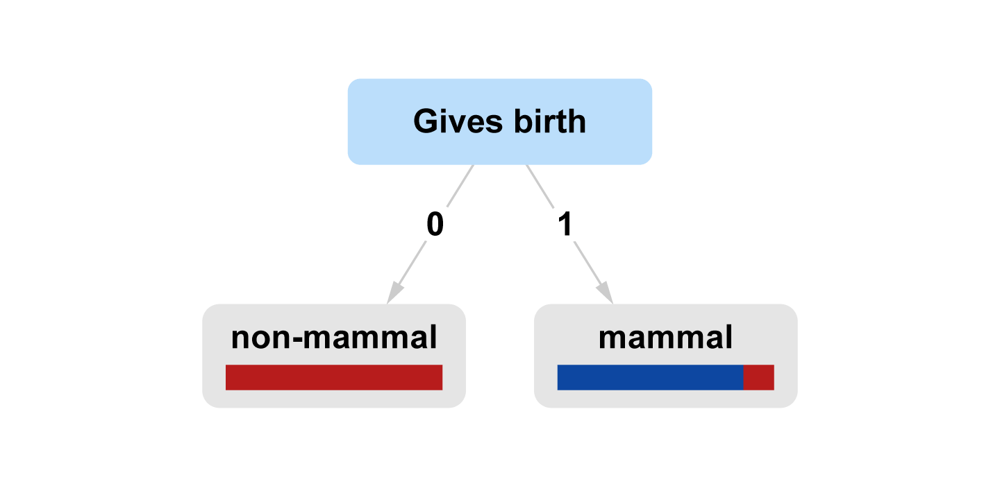
This figure exported from RapidMiner combines the tree structure into the data that is distributed between the nodes. In RapidMiner the condition is represented as a rectangle without a colour bar while the leaves are with colour bars. The colour represents the class, red is ‘non-mammal’ and blue is ‘mammal’. The thickness of the colour represents the data percentage, in our dataset \(10/15≈67%\) of the animals are ‘non-mammals’ and \(5/15≈33%\) are ‘mammals’. Here in the above decision tree graph we have 60% of the data in the left and 40% of the data in the right node. The left hand side node is pure red (‘non-mammals’) and the right hand side is mainly blue (‘mammals’) with some red.
The figure shows that if we split according to the ‘Gives Birth’ feature only, setting aside all other features, then this split gives us a pure leaf for the left hand side branch of the tree. This means that the learning algorithm discovered that all 100% of animals that do not ‘Gives Birth’ are definitely ‘non-mammals’ (note that in the dataset 60% of the animals that are ‘non-mammals’ and do not ‘Gives Birth’). It also shows that we have a mixture of mammals and non-mammals in the right hand leaf node with the majority being mammals. This means that we can further split the right hand side node using another feature.
Now let's move to the next feature, and we continue to split our data in our tree with feature ‘Warm-blooded’. If we do so we get the following graph:
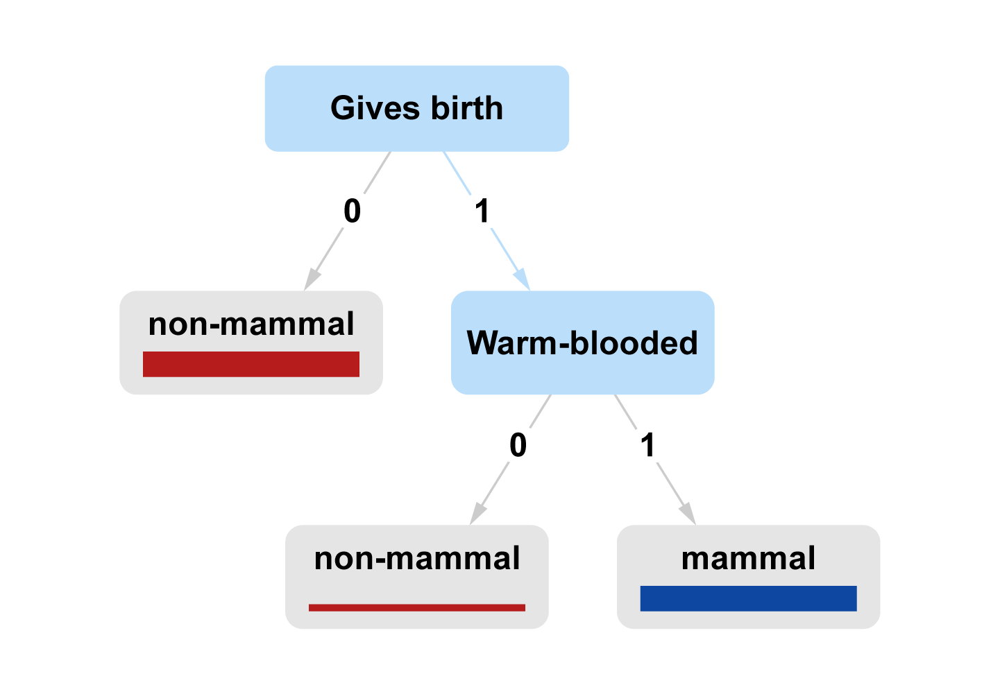
This shows that we can actually decide whether an animal is a mammal using only the two features shown above and all other features are not needed to do so. We can discard all other features and suffice by the ‘Gives Birth’ and ‘Warm-blooded’ features. Later we will see that we cannot do so if we want to know finer classification for the animal such as ‘reptile’ or ‘fish’.
| Name | Gives birth | Warm-blooded | Mammality class |
|---|---|---|---|
| human | 1 | 1 | mammal |
| python | 0 | 0 | non-mammal |
| salmon | 0 | 0 | non-mammal |
| whale | 1 | 1 | mammal |
| frog | 0 | 0 | non-mammal |
| komodo | 0 | 0 | non-mammal |
| bat | 1 | 1 | mammal |
| pigeon | 0 | 1 | non-mammal |
| cat | 1 | 1 | mammal |
| leopard shark | 1 | 0 | non-mammal |
| turtle | 0 | 0 | non-mammal |
| penguin | 0 | 1 | non-mammal |
| porcupine | 1 | 1 | mammal |
| eel | 0 | 0 | non-mammal |
| salamander | 0 | 0 | non-mammal |
Table: Mammals class dataset with necessary and sufficient features.
Video
Watch this video to see how we can easily build a decision tree model in RapidMiner.
Exercise
Pick another feature to start with, and try the process again. What happens?. Hint: compare between the information gain when we start the split by ‘Gives Birth’ and when we start the split by ‘Warm-blooded’.
Exercise
Build a decision tree for the original dataset including all of the original features. This is a good opportunity to try using RapidMiner if you want to.
Exercise
Take away all the features except for ‘Gives Birth’ and ‘Warm Blooded’ from the original dataset. Now attempt to build a decision tree from this new dataset. Are the leaves pure? Can you estimate the accuracy of the decisions that will be made by this tree?
Validity of decision trees
Complex structures that are called decision trees may not satisfy the definition of an automatic decision tree due to horizontal and cyclic paths. See the following example of a DT for risk assessment by one of the NHS groups in the north of England, which violates the definition in one horizontal connection. For a more complex example of more violation of the automated DT see this example for Cattle testing. It should be noted that it is possible to reproduce these structures to be a valid DT or to validate DT based on a raw dataset, see this article for example.
Decision boundaries of decision trees and the limitations of decision trees
So far we have seen how decision trees work and how they are inducted (trained). Later we will see how to measure their performance. But first we would like to further study their inner properties. In particular, we would like to see what type of decision boundaries they constitute. The idea of decision boundaries is central to classification and not unique to decision trees. It will reappear in other types of classification techniques we will study later, such as the perceptron and k-nearest neighbour (k-NN) algorithms. One way to understand the decision boundaries of a classifier is by plotting a dataset in 2D or 3D, note however that the discussion extends to any space dimension not just 2D but it would be harder to visualise it. Let us start with a simple decision tree with its decision boundary.

Figure 2.32. (Left) Scatter graph showing binary class balanced data with a linearly separable decision boundary. (Right) Decision tree (DT) expected to concisely express binary class balanced data with a linearly separable decision boundary.

Figure 2.33. (Left) Scatter graph showing binary class balanced data with large margin linearly separable decision boundaries. (Right) Decision tree (DT) expected to concisely express binary class balanced data with large margin linearly separable decision boundaries.

Figure 2.34. (Left) Scatter graph showing binary class balanced data with three large margin linearly separable decision boundaries. (Right) Decision tree (DT) expected to concisely express binary class balanced data with three large margin linearly separable decision boundaries.

Figure 2.35. (Left) Scatter graph showing binary class balanced data with non-linearly separable decision boundaries. (Right) Decision tree (DT) expected to concisely express binary class balanced data with non-linearly separable decision boundaries.
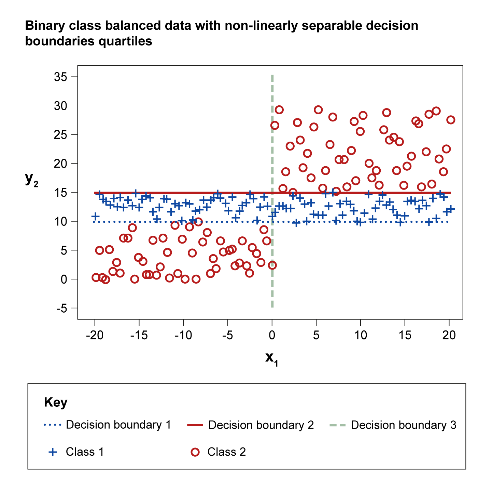
Figure 2.36. Scatter graph showing binary class balanced data with non-linearly separable decision boundaries quartiles.
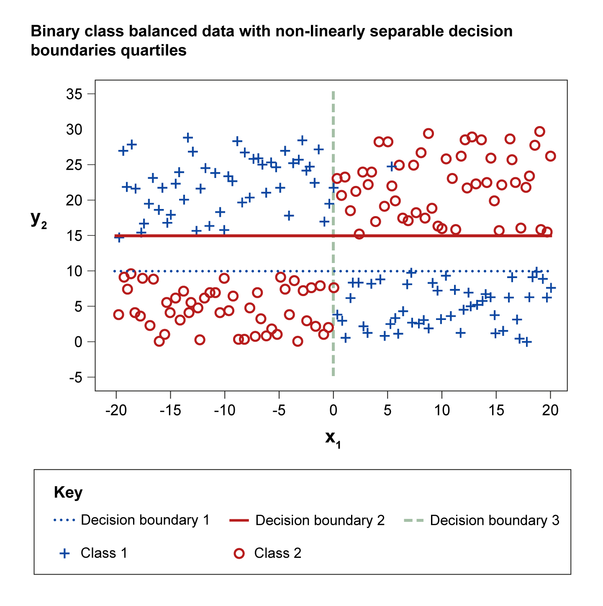
Figure 2.37. Scatter graph showing binary class balanced data with non-linearly separable decision boundaries quartiles.

Figure 2.38. (Left) Scatter graph showing binary class balanced data with a linearly separable diagonal decision boundary. (Right) Decision tree (DT) expected to concisely express binary class balanced data with a linearly separable diagonal decision boundary.
In the above cases, we showed the data and the decision boundary on the left-hand side, and on the right-hand side we showed the corresponding expected decision tree that can express the data concisely. In classification such decision boundaries are crucial in two ways: they help us understand the nature of the data, and they help us to assign a suitable technique to the problem in hand. It is not always possible to represent the data in two-dimensional space, in fact it is rarely the case. However, even when we move to higher space dimension, a similar argument can hold.
The boundaries are assumed when we constructed the datasets. The boundaries do not exist separately from the dataset, instead they are inferred from the dataset. In the decision trees, the nodes correspond to the condition as usual. These conditions that help us decide the classes of the dataset create their own boundaries.
In the first case (Figure 2.32), any point above the boundary is of class 1 and any point below the boundary is from class 2.
In the second case (Figure 2.33), we have a large margin decision boundaries and we can express the tree in several ways; one of them is shown.
In the third case (Figure 2.34), the tree is simplified to reflect a midpoint margin.
In the fourth case (Figure 2.35), we sandwiched class 1 between two parts of class 2.
In the fifth case (Figure 2.36), we sandwiched class 1 but class 2 is separated in two different quarters.
In the sixth case (Figure 2.37), we distribute the two classes into four crossed quarters.
In the seventh case (Figure 2.38), the data is distributed above and below a diagonal line.
So let us see if it would be able to recognise the decision boundaries of the data and build corresponding trees as per our expectations if we hand in the generated data to the CART decision tree induction algorithm. Below are the results.
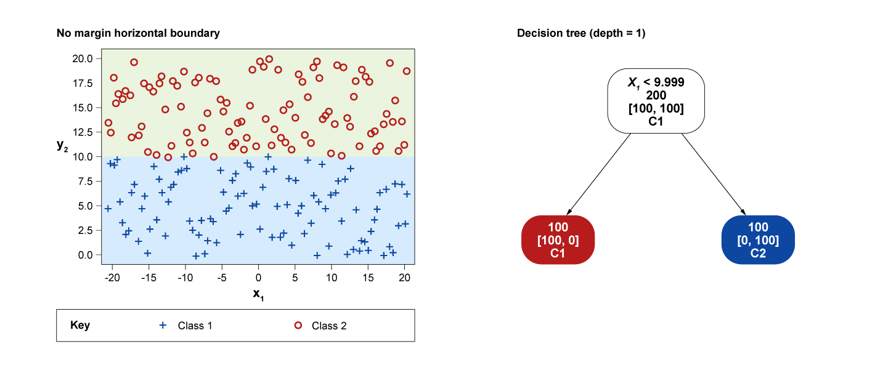
Figure 2.39. (Left) Scatter graph showing classes data with a no margin horizontal decision boundary. (Right) A corresponding decision tree (DT) built using the CART DT induction algorithm.
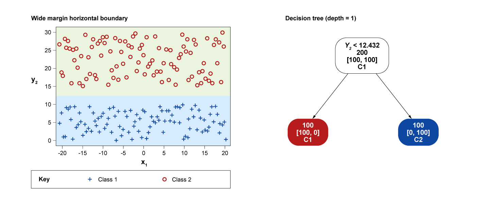
Figure 2.40. (Left) Scatter graph showing classes data with wide margin horizontal decision boundary. (Right) A corresponding decision tree (DT) built using the CART DT induction algorithm.
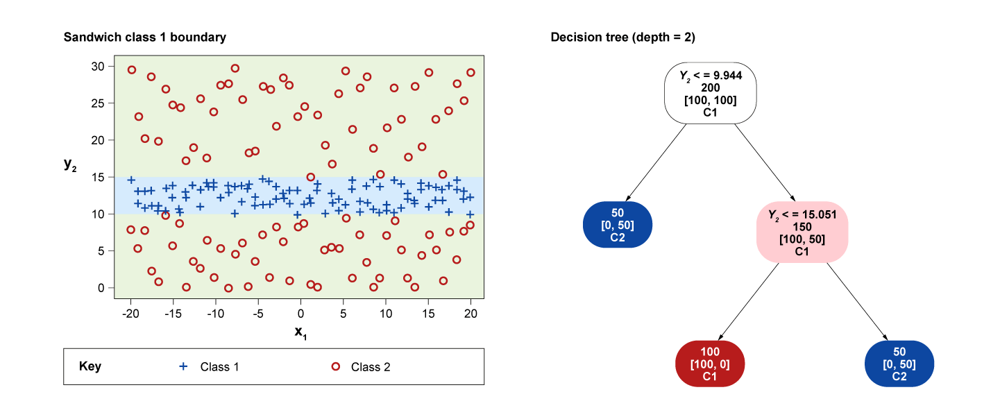
Figure 2.41. (Left) Scatter graph showing classes data with a sandwich class 1 decision boundary. (Right) A corresponding decision tree (DT) built using the CART DT induction algorithm.
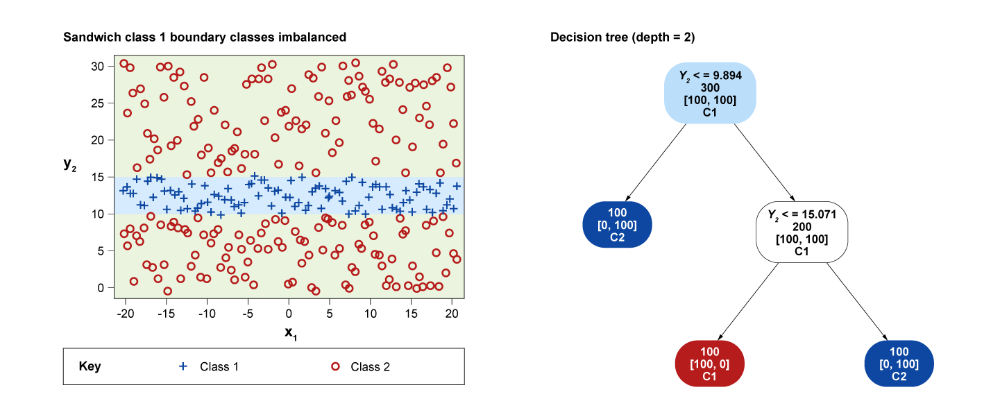
Figure 2.42. (Left) Scatter graph showing classes data with a sandwich class 1 decision boundary. The classes are imbalanced. (Right) A corresponding decision tree (DT) built using the CART DT induction algorithm.
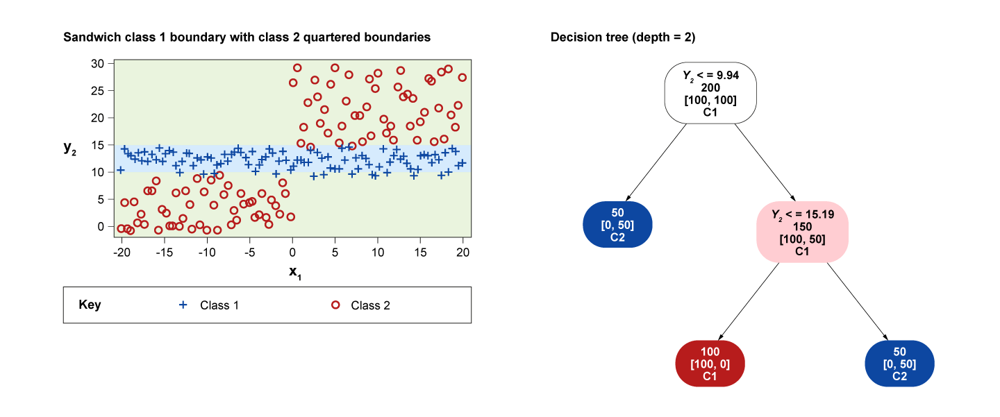
Figure 2.43. (Left) Scatter graph showing classes data with a sandwich class 1 decision boundary and class 2 quartered decision boundaries. (Right) A corresponding decision tree (DT) built using the CART DT induction algorithm.
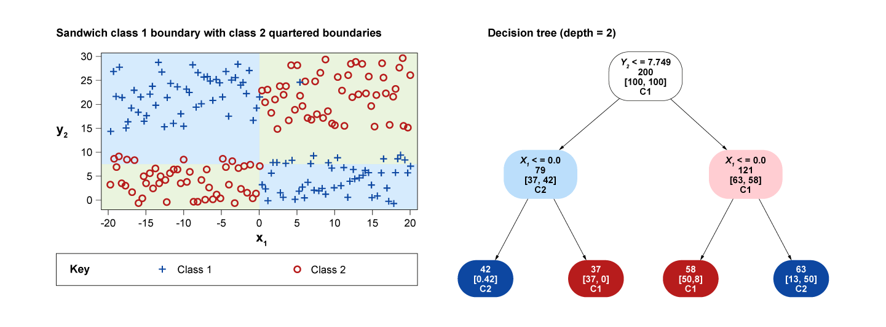
Figure 2.44. (Left) Scatter graph showing classes data with quartered, cross-class decision boundaries. (Right) A corresponding decision tree (DT) built using the CART DT induction algorithm.
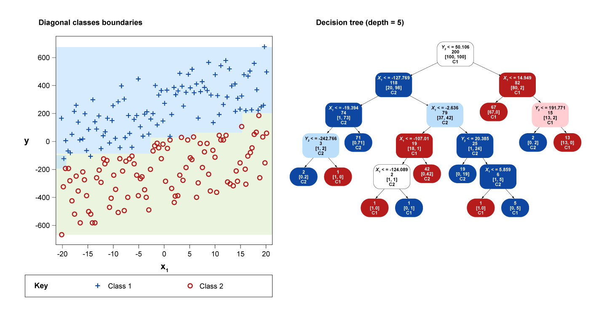
Figure 2.45. (Left) Scatter graph showing classes data with diagonal classes decision boundaries. (Right) A corresponding decision tree (DT) built using the CART DT induction algorithm.
Note how the algorithm struggled with the last case as the classes and its corresponding boundary becomes non-linearly separable. Linearly separable classes are those classes that we separate by just a line. Non-linearly separable classes are those that need more than one line to separate them or those that need another more complex shape to separate them, whether the shape is regular such as a circle or hyperbola or non-regular such as a convoluted curve. Here the boundaries are inferred from the decision tree itself, unlike the previous set of figures where the boundaries were assumed when we constructed the datasets. As we can see, the DT struggles the most when the data is diagonal. This is because the CART deals with one feature at a time in its conditions.
Obviously, there are ways to work around this issue. The most obvious is to allow the DT to deal with two features inside its conditions. This would add to the complexity of the algorithms, and the problem becomes extenuated when we consider hundreds of features. If we are to consider all possible combinations of even 20 features this would amount to checking \(2^{20}=1,048,576\) combinations. If each one has 10 possible values we are talking about \(10^{20}=100,000,000,000,000,000,000\) which is clearly problematic. So the DT might not be the best in dealing with these cases. In fact, it is not great at dealing with numerical data in general. Please note that the decision boundary idea is quite powerful and we will utilise it in other techniques more centrally. These better suited techniques include the perceptron, multi-layer perceptron and nearest neighbours classifiers.
Exercise
In the following Jupyter notebook exercise you will be able to visualise the decision boundaries of a decision trees.
- Download exercise (.ipynb): Classifier decision boundaries
Summary
In this lesson we have covered decision trees, an important and pervasive technique for classification. We have looked at the CART algorithm and seen examples of its inner mechanism. We have also discussed limitations and decision boundaries of DT. DT is quite a powerful technique in terms of interpretation and can provide an excellent tool to convey and explain decisions made by it. However it employs a local search strategy when it comes to growing its branches and it has rectilinear decision boundaries. Although there are ways to mitigate these limitations, DT might not be the best technique when we deal with numerical data because it is discretised by nature.